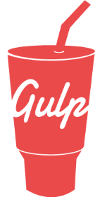
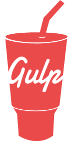

the streaming build system
Sebastian Burgstaller
Was ist Gulp.js?
- Tool zur Automatisierung von oft ausgeführten Tasks
- Alternative zu Grunt
- Ideal für Continuous Integration
Anwendungsbereiche
- Unit Tests
- Transpilieren von TypeScript, ES6
- Minification
- Concatenation
- Kompilieren von LESS nach CSS
- JS / CSS Code Analyse
- Hot-Reload
- Vendor prefixes
- Dateien in HTML injecten
Was unterscheidet Gulp von Grunt?
- Code over Configuration
- Gulp Task === JavaScript code
- Streambasierte Verarbeitung von Dateien
 

Dateibasierte Verarbeitung (Grunt)

Streambasierte Verarbeitung (Gulp)

Nochmal für visuelle Typen

Vorbereitungen
- Kenntnisse in JavaScript
- Node.js installieren
- Text-Editor, oder IDE
Node.js unter Windows
Chocolatey installieren (https://chocolatey.org)
1: 2: 3: |
|
Node.js mit Chocolatey installieren
1:
|
|
Node.js unter Ubuntu
1: 2: |
|
Node.js unter Mac OS X
Homebrew installieren (http://brew.sh/)
1:
|
|
Node.js mit Homebrew installieren
1:
|
|
Gulp mit NPM installieren
1:
|
|
Gulp Datei erstellen
Minimalbeispiel für gulpfile.js:
1: 2: 3: 4: 5: |
|
Hier der Output:
1: 2: 3: 4: 5: |
|
Die 4 Api Methoden von Gulp
- gulp.task
- gulp.src
- gulp.dest
- gulp.watch
1. gulp.task
gulp.task(name [, dep], fn)
1: 2: 3: |
|
Registriert einen neuen Gulp Task. Optional können Tasks definiert werden die vorher ausgeführt werden müssen.
Der Task default wird dann aufgerufen, wenn man Gulp ohne Argumente aufruft.
DEMO
gulp.task(name [, dep], fn)
1: 2: 3: |
|
Die Gulp Tasks clean und jshint werden vor js ausgeführt.
Wird folgendermaßen aufgerufen:
1:
|
|
!
Dependency Tasks werden parallelisiert ausgeführt.
Die Reihenfolge der Elemente im Array hat keine Bedeutung.
2. gulp.src
gulp.src(glob, [, options])
1: 2: 3: 4: 5: 6: |
|
https://github.com/isaacs/node-glob
Gibt einen lesbaren Stream der entsprechenden Dateien zurück.
3. gulp.dest
gulp.dest(path [, options])
1: 2: 3: 4: 5: 6: |
|
Gibt einen beschreibbaren Stream zurück. Datei-Objekte die in diesen Stream gepiped werden, landen auf der Festplatte.
DEMO
4. gulp.watch
gulp.watch(glob [, opts], tasks || func)
1: 2: 3: |
|
1: 2: 3: 4: 5: |
|
Überwacht das Dateisystem und triggert Tasks, wenn Änderungen erkannt werden.
DEMO
Jetzt kennen wir alle Methoden von Gulp
Fragen? :-)
Viel Spaß beim Ausprobieren!
- Gulp: http://gulpjs.com/
- Gulp Plugins: http://gulpjs.com/plugins/
- Komplexes Beispiel: https://github.com/johnpapa/gulp-patterns
- Folien und Demos: https://github.com/seburgi/devmeetupk
- FsReveal: https://github.com/fsprojects/FsReveal
Sebastian Burgstaller